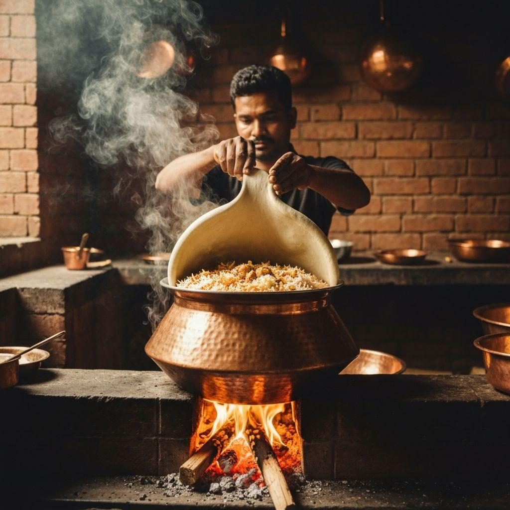
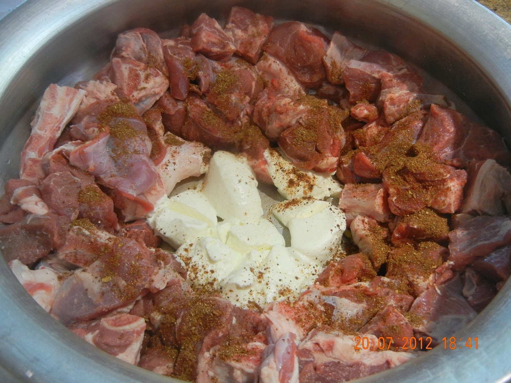

Home / How It's Made
The method
How It's Made
A marinade made mostly of plants, careful layers and a pot sealed shut with dough.
What goes in
The marinade and the layers
Bone-in goat meat, called khashi, rests in the marinade before it goes into the pot raw.
MeatGoat (khashi)Bone-in, stays rich through hours of slow cooking.
DairyYogurtCoats the meat and helps it soften.
Rhizome + bulbGinger & garlicGround to a paste for a savory base.
BulbFried onionBeresta: crisp, sweet and golden.
Bark, bud, fruitWhole spicesCinnamon, clove and cardamom release fragrance under dum.
GrainAromatic ricePar-boiled so it finishes in the steam.
TuberPotatoesThe Dhaka signature, soaking up meat juices.
FatGheeCarries the spice aroma through the rice.
Dum pukht
Cooking with trapped steam
Choose a step to open it.
Plant in the seal
The rope of dough that closes the lid is wheat flour and water: a plant that keeps every other plant’s aroma inside.
The rope of dough that closes the lid is wheat flour and water: a plant that keeps every other plant’s aroma inside.

Knowledge, not a recipe card
Learned by watching
Most kacchi cooks never measure from a book. The balance of spice, the heat of the fire and the moment to seal the pot are learned beside an older cook, which is exactly the kind of knowledge ethnobotany records.